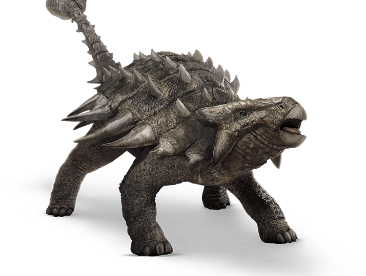

Ankylosaurus is a dinosaur which lived approximately 70 million years ago during the
Cretaceous Period. It was first discovered in 1908 by Barnum Brown.
It was named Ankylosaurus—a name which means “fused lizard”. Fossils of this dinosaur
have been found in Canada and western portions of the United States.
Ankylosaurus is one of the largest armor plated dinosaurs ever discovered.
This animal was approximately 30 feet long, 6 feet wide, 4 feet tall and weighed
right around 4 tons. It has many large oval plates that were fused into its leathery skin,
and these plates covered this dinosaur’s entire body except for its belly, which would have been exposed.
This dinosaur also had two rows of spikes that traveled down its body, large horns on
top of its head and a club like tail that had spikes on it. All of this armor was necessary
for it to protect itself from some of the apex predators of the time including the T Rex, Deinonychus
and Tarbosaurus. The only way any of these predators could wound the Ankylosaurus would be for them to
attack the underbelly of this dinosaur where there wasn’t any armor.
These dinosaurs were herbivores—meaning they fed
on plants and trees. Since its teeth were insufficient to crush
plant matter, it more than likely used their teeth to strip leaves from branches.
They would then use fermentation to break down this plant material in their guts.
Although the Ankylosaurus was a well armored creature, it was also quite slow.
Computer models suggest that these creatures could only move about 6 miles per hour,
which is just slightly faster than a turtle traveling at top speed.